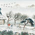

Home
봄 절기 안내
입춘

24절기 중 첫째 절기로 대한(大寒)과 우수(雨水) 사이에 있는 절기. 보통 양력 2월 4일경에 해당한다. 태양의 황경(黃經)이 315도일 때로 이날부터 봄이 시작된다. 입춘은 음력으로 주로 정월에 드는데, 어떤 해는 정월과 섣달에 거듭 드는 때가 있다. 이럴 경우 ‘재봉춘(再逢春)’이라 한다.
[목우제사 - 입춘풍습]

[제주입춘굿 - 입춘풍습]
우수
봄에 들어선다는 입춘과 동면하던 개구리가 놀라서 깬다는 경칩 사이에 있는 24절기의 하나. 입춘 입기일(入氣日) 15일 후인 양력 2월 19일 또는 20일이 되며 태양의 황경이 330도의 위치에 올 때이다.
경칩
24절기 중 세 번째 절기(節氣). 계칩(啓蟄)이라고도 한다. 태양의 황경(黃經)이 345도에 이르는 때로 동지 이후 74일째 되는 날이다. 양력으로는 3월 5일 무렵이 된다.

[고로쇠물마시기 - 경칩풍습]
춘분

24절기의 네 번째 절기. 춘분(春分)은 경칩(驚蟄)과 청명(淸明)의 중간에 드는 절기로 양력 3월 21일 전후, 음력 2월 무렵에 든다. 이날 태양이 남쪽에서 북쪽으로 향하여 적도를 통과하는 점, 곧 황도(黃道)와 적도(赤道)가 교차하는 점인 춘분점(春分點)에 이르렀을 때, 태양의 중심이 적도(赤道) 위를 똑바로 비추어, 양(陽)이 정동(正東)에 음(陰)이 정서(正西)에 있으므로 춘분이라 한다. 이날은 음양이 서로 반인만큼 낮과 밤의 길이가 같고 추위와 더위가 같다. 이 절기를 전후하여 농가에서는 봄보리를 갈고 춘경(春耕)을 하며 담도 고치고 들나물을 캐어먹는다.
[사한제 - 춘분풍습]
청명

음력 3월에 드는 24절기의 다섯 번째 절기. 청명(淸明)이란 하늘이 차츰 맑아진다는 뜻을 지닌 말이다.
곡우
24절기의 여섯 번째 절기. 곡우(穀雨)는 청명(淸明)과 입하(立夏) 사이에 있으며, 음력 3월 중순경으로, 양력 4월 20일 무렵에 해당한다. 곡우의 의미는 봄비[雨]가 내려 백곡[穀]을 기름지게 한다는 뜻이다.

[곡우물마시기 - 곡우풍습]